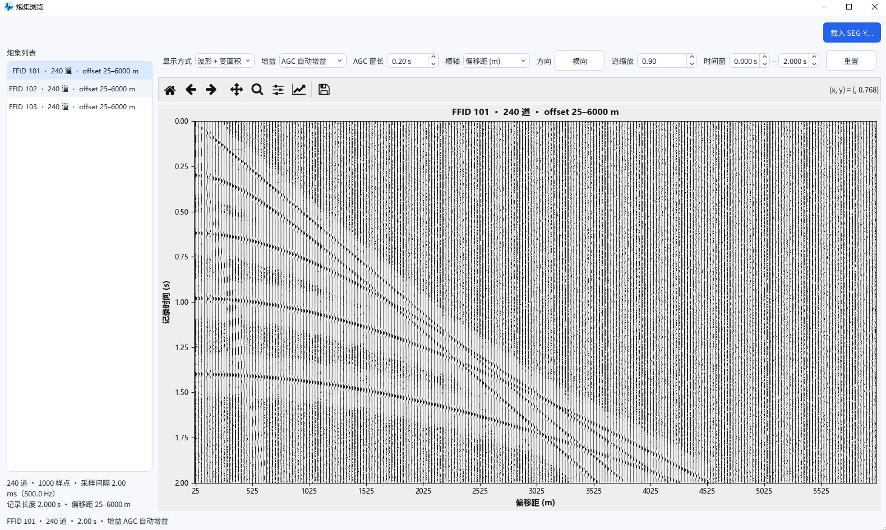
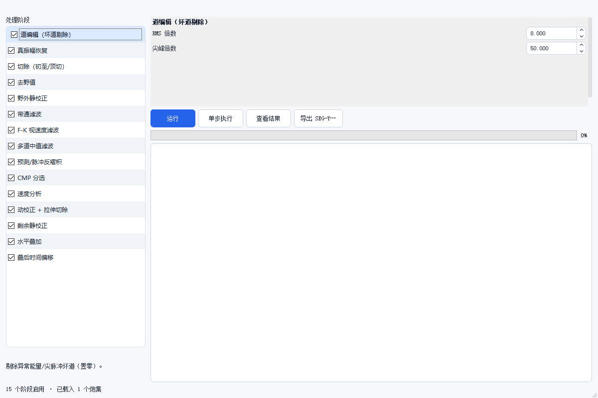

勘探地震
勘探地震在 0.1.12 中首次提供，包含炮集浏览和一条十五阶段的二维反射处理流水线。 炮集浏览是成熟的——读入 SEG-Y、翻看炮集、调增益和显示方式，这部分可以放心用。
处理工作流则仍在完善中。十五个阶段的算法都已接上，但：
- 参数默认值没有针对不同采集条件做标定，多数情况需要你自己试；
- 缺少与商业软件（如 ProMAX / Vista / SeisSpace）的对比验证， 输出剖面不能直接当作最终成果；
- 速度分析、剩余静校正这类需要迭代的环节，自动化程度低，结果依赖人工判断。
建议把它当作学习流程、快速试验参数、或处理合成数据的工具。 要做正式处理，请用成熟商业软件，或至少用本工具的结果与成熟软件交叉比对。
炮集浏览

入口：数据 › 勘探地震 › 炮集浏览。
这是检查原始炮集的地方——在跑任何处理之前，先确认数据本身没问题。
| 控件 | 作用 |
|---|---|
| 显示方式 | 波形 / 变面积 / 变密度，同一炮换着看，弱反射在变面积下更清楚 |
| 增益 | AGC 自动增益 / 无增益。看深部弱信号开 AGC |
| AGC 窗长 | 自动增益的滑动窗长度，越小补偿越剧烈 |
| 横轴 | 偏移距（m）或道号 |
| 方向 | 横向 / 纵向排列道集 |
| 道缩放 | 相邻道的重叠程度，太密会糊成一片 |
| 时间窗 | 只显示某个时段的波形，用于放大目标层位 |
| 重置 | 回到默认视图 |
- 初至是否连续：突然跳变说明有坏道或炮点问题。
- 有没有异常强的道：单道振幅明显突出，多半是坏道或耦合不良。
- 面波与反射是否分得开：分不开的话后面的滤波和切除会很吃力。
底部状态行给出当前炮的规模：道数、样点数、采样间隔、记录长度、偏移距范围。 判断能不能做深部成像，先看记录长度够不够。
处理工作流

入口：数据 › 勘探地震 › 处理工作流。
十五个阶段
左侧列表是完整的常规二维反射处理序列，每一项都可以单独勾选启用或跳过。
| 序 | 阶段 | 作用 |
|---|---|---|
| 1 | 道编辑（坏道剔除） | 按 RMS 倍数与尖峰倍数剔掉坏道 |
| 2 | 真振幅恢复 | 补偿球面扩散与吸收 |
| 3 | 切除（初至/顶切） | 切掉初至前的噪声与直达波 |
| 4 | 去野值 | 压制离群采样 |
| 5 | 野外静校正 | 校正炮点/检波点高程与风化层 |
| 6 | 带通滤波 | 压制面波与高频噪声 |
| 7 | F-K 视速度滤波 | 按视速度分离线性同相轴 |
| 8 | 多道中值滤波 | 压制非相干噪声 |
| 9 | 预测/脉冲反褶积 | 提高垂向分辨率 |
| 10 | CMP 分选 | 按共中心点重组道集 |
| 11 | 速度分析 | 求叠加速度谱 |
| 12 | 动校正 + 拉伸切除 | 拉平同相轴，切掉拉伸畸变段 |
| 13 | 剩余静校正 | 校正剩余时差 |
| 14 | 水平叠加 | 得到叠后剖面 |
| 15 | 叠后时间偏移 | 把倾斜界面归位 |
顺序不能随便换。静校正必须在动校正之前，动校正必须在叠加之前， 偏移必须在叠加之后——这是方法本身决定的，不是软件限制。
参数编辑
选中左侧某一阶段，右侧显示它的参数。以「道编辑（坏道剔除）」为例：
| 参数 | 默认 | 说明 |
|---|---|---|
| RMS 倍数 | 8.000 | 道振幅超过全炮 RMS 的这个倍数判为坏道 |
| 尖峰倍数 | 50.000 | 单点振幅超过该倍数的判为尖峰 |
每个阶段的参数不同，选中后逐项看。参数改了不影响已算出的结果， 需要重新运行。
执行方式
| 按钮 | 作用 |
|---|---|
| 运行 | 从当前阶段开始跑完整个流程 |
| 单步执行 | 只跑一个阶段，看结果再决定 |
| 查看结果 | 打开结果图件 |
| 导出 SEG-Y… | 把处理结果写成 SEG-Y |
底部状态行显示「N 个阶段启用 · 已载入 M 个炮集」，进度条显示总体进度。
相关入口
| 菜单 | 作用 |
|---|---|
| 数据 › 勘探地震 › 正演模拟 | 合成二维炮集，用于验证流程 |
| 绘图 › 勘探地震模式（单画布） | 主画布切换成勘探显示方式 |
| 绘图 › 旋转炮集方向（道集横/纵） | 横轴在偏移距与时间之间切换 |
常见问题
导入炮集后还是提示没有炮集？ 炮集需要带 FFID（炮号）道头。没有炮号的 SEG-Y 会被当成一条普通波形， 不会进入勘探模块。
速度谱是一团糊？ 道集里坏道太多。先做道编辑（第 1 阶段）和去野值（第 4 阶段），再回来做速度分析。
叠加剖面同相轴不连续？ 静校正没做干净。回头调第 5 和第 13 阶段的参数，用单步执行反复看。
处理结果看着不对 / 剖面不像地质结构？ 先别急着调参数——工作流本身仍在完善中，见本章开头的说明。建议拿同一份数据 在成熟软件里跑一遍对照，再判断是本工具的问题还是参数没调对。